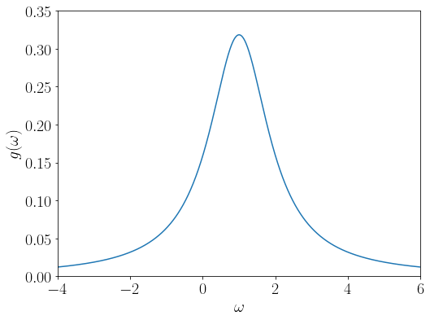
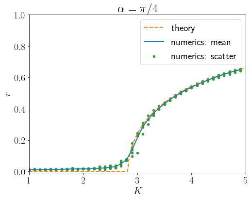

坂口-蔵本モデルのダイナミクス
坂口-蔵本モデルは蔵本モデルにphase lagを導入したモデルで、次の微分方程式で表されます。 $$ \frac{d\theta_{i}}{dt}=\omega_{i}+\frac{K}{N}\sum_{j=1}^{N}\sin(\theta_{j}-\theta_{i}+\alpha),\quad i=1,\dots,N. $$ \(\alpha\)が位相差に対応していて、\(\alpha=0\)のときは蔵本モデルに戻ります。 結合強度\(K\)が変化したときに振動子が同期するかどうかを調べていきましょう。
自然振動数分布¶
各振動子は固有の角速度である\(\omega_{i}\)を持っています。 蔵本モデル関連の論文では\(\omega_{i}\)は分布に従っていると仮定しています。 この分布のことを自然振動数分布と呼びます。 分布としてはGauss分布を選ぶのかと思いきや、蔵本モデルにおいては解析のしやすさからCauchy分布が選ばれています。 $$ g(\omega)=\frac{\Delta}{\pi}\frac{1}{(\omega-\omega_{0})^{2}+\Delta^{2}} $$ \(\omega_{0}\)は分布の中心で、\(\Delta\)は分布の幅を表します。 このページでもCauchy分布を用いることにします。

秩序変数¶
同期の具合をはかるパラメーターとして秩序変数(order parameter)を導入します。 $$ z=re^{i\phi}=\frac{1}{N}\sum_{j=1}^{N}e^{i\theta_{j}} $$
- \(r\approx0\)のときは振動子たちは円周上をバラバラに分布しているため、同期していないことがわかります。
- \(r=1\)のときには振動子たちは円周上の1点に集中しているため、完全同期しています。
連続極限¶
振動子が無限個ある極限\(N\to\infty\)において、微分方程式は連続の式に従います。 $$ \frac{\partial f}{\partial t}+\frac{\partial}{\partial\theta}(V[f]f)=0 $$ ここで\(V[f]\)は速度場で微分方程式を無限に飛ばした式になります。 $$ V[f]=\omega+K\int_{\mathbb{R}}d\omega'\int_{\mathbb{S}^{1}}d\theta' f(\theta',\omega',t)\sin(\theta'-\theta+\alpha) $$
- \(f(\theta,\omega,t)\)は時刻\(t\)における\(\theta,\omega\)の密度関数になります。 すなわち、\([\theta,\theta+\delta\theta)\times[\omega,\omega+\delta\omega)\)に存在する振動子の割合が \(f(\theta,\omega,t)\delta\theta\delta\omega\)になります。
- \(\omega\)は\(g(\omega)\)に従うので、 $$ \int_{\mathbb{S}^{1}}d\theta f(\theta,\omega,t)=g(\omega) $$ が成り立ちます。
- 連続極限において秩序変数は $$ z=re^{i\phi}=\int_{\mathbb{R}}d\omega\int_{\mathbb{S}^{1}}d\theta f(\theta,\omega,t)e^{i\theta} $$ となります。
Fourier級数展開¶
分布関数\(f(\theta,\omega,t)\)について、\(\theta\)方向は\(\mathbb{S}^{1}\)に乗っているのでFourier級数展開ができます。 $$ f(\theta,\omega,t)=\frac{1}{2\pi}\sum_{k\in\mathbb{Z}}\hat{f} _ {k}(\omega,t)e^{-ik\theta} $$ これをもとに連続の式もFourier級数展開しましょう。 かんたんのために\(h(\omega)\)の\(\omega\)積分を\(\langle h\rangle\)と書くことにします。 $$ \begin{aligned}V[f]=&\omega+\frac{Ke^{-i(\theta-\alpha)}}{2i}\int_{\mathbb{R}}d\omega'\int_{\mathbb{S}^{1}}d\theta' f(\theta',\omega',t)e^{i\theta'}-\frac{Ke^{i(\theta-\alpha)}}{2i}\int_{\mathbb{R}}d\omega'\int_{\mathbb{S}^{1}}d\theta' f(\theta',\omega',t)e^{-i\theta'}\\=&\omega+\frac{Ke^{-i(\theta-\alpha)}}{2i}\langle\hat{f} _ {1}\rangle-\frac{Ke^{i(\theta-\alpha)}}{2i}\langle\hat{f} _ {-1}\rangle \end{aligned}$$ であるので、 $$ \widehat{V[f]} _ {0}=2\pi\omega,\widehat{V[f]} _ {-1}=i\pi Ke^{-i\alpha}\langle\hat{f} _ {-1}\rangle,\widehat{V[f]} _ {1}=-i\pi Ke^{i\alpha}\langle\hat{f} _ {1}\rangle $$ がわかります。 これを連続の式に代入することで、 $$ \begin{aligned} \frac{\partial\hat{f} _ {k}}{\partial t}=&-\widehat{\frac{\partial}{\partial\theta}(V[f]f)} _ {k}=ik\widehat{V[f]f} _ {k}=\frac{ik}{2\pi}\left(\sum_{l\in\mathbb{Z}}\widehat{V[f]} _ {l}\hat{f} _ {k-l}\right)=\frac{ik}{2\pi}\left(\sum_{l=0,\pm1}\widehat{V[f]} _ {l}\hat{f} _ {k-l}\right)\\=&ik\omega\hat{f} _ {k}+\frac{kKe^{i\alpha}}{2}\langle\hat{f} _ {1}\rangle\hat{f} _ {k-1}-\frac{kKe^{-i\alpha}}{2}\langle\hat{f} _ {-1}\rangle\hat{f} _ {k+1} \end{aligned} $$ となります。特に秩序変数が\(z=\langle\hat{f} _ {1}\rangle\)で書けるので、 $$ \frac{\partial\hat{f} _ {k}}{\partial t}=ik\omega\hat{f} _ {k}+\frac{kKe^{i\alpha}z}{2}\hat{f} _ {k-1}-\frac{kKe^{-i\alpha}\overline{z}}{2}\hat{f} _ {k+1} $$ とさらに簡略化して書くことができます。 この偏微分方程式を解くことができればダイナミクスの理解が進むのですが、 このままでは難しいです。 この難しさを乗り越えたのがOtt-Antonsen縮約と呼ばれるものがあって、この偏微分方程式の特解を表します。
Ott-Antonsen縮約¶
Ott-Antonsen縮約は蔵本モデルの連続の式の特解を表すもので、 $$ f(\theta,\omega,t)=\frac{g(\omega)}{2\pi}\left(1+\sum_{k=1}^{\infty}a(\omega,t)^{k}e^{ik\theta}+\sum_{k=1}^{\infty}\overline{a(\omega,t)}^{k}e^{-ik\theta}\right) $$ の形を取るものを言います。ただし、\(a(\omega,t)\)は未知関数です。Fourier級数展開の形でかくならば $$ \begin{aligned} \hat{f}_{k}(\omega,t)= \begin{cases} g(\omega) & k=0\\g(\omega)\overline{a(\omega,t)}^{k} & k > 0\\g(\omega)a(\omega,t)^{-k} & k < 0 \end{cases} \end{aligned} $$ です。 これを上の偏微分方程式に代入すると任意の\(k\ne0\)で $$ \frac{\partial \overline{a}}{\partial t}=i\omega\overline{a}+\frac{Ke^{i\alpha}z}{2}+\frac{Ke^{-i\alpha}\overline{z}}{2}\overline{a}^{2} $$ が得られます。そのため、この偏微分方程式を解くことができればもとの蔵本モデルが解けたことになります。
Cauchy分布の場合¶
Cauchy分布の場合は\(\overline{a}\)の偏微分方程式がさらにかんたんになります。 Ott-Antonsen縮約のもとで\(z=\langle g(\cdot)\overline{a(\cdot,t)}\rangle\)となります。 さらに、\(\overline{a(\omega,t)}\)が複素平面の上半平面上で\(\omega\)に関して正則かつ遠方で\(0\)に減衰すると仮定すると留数定理を使うことができて、極\(\omega=\omega_{0}+i\Delta\)周りの留数を計算することで、 $$ z=\frac{\Delta}{\pi}\int_{\mathbb{R}}\frac{\overline{a(\omega,t)}}{(\omega-\omega_{0})^{2}+\Delta^{2}}d\omega=\frac{\Delta}{\pi}2\pi i \text{Res} _ {\omega=\omega_{0}+i\Delta}\frac{\overline{a(\omega,t)}}{(\omega-\omega_{0})^{2}+\Delta^{2}}=\overline{a(\omega_{0}+i\Delta,t)} $$ となります。 \(\overline{a}\)の\(\omega_{0}+i\Delta\)における値がちょうど秩序変数になる、というのは極めて重要な結果です。こういう理由もあって蔵本モデルではCauchy分布が積極的に用いられます。 (他にも定常解周りの線形安定性解析で固有値(スペクトル)を手で求めることができる、などの利点もあります。)
\(\overline{a}\)の偏微分方程式について\(\omega=\omega_{0}+i\Delta\)を代入すると、 $$ \frac{dz}{dt}=i\omega_{0}z+\left(\frac{Ke^{i\alpha}}{2}-\Delta\right)z-\frac{Ke^{-i\alpha}}{2}|z|^{2}z $$ となります。 これが秩序変数のダイナミクスを表す微分方程式です。\(z\)は複素数なので\(z=re^{i\phi}\)として\(r\)と\(\phi\)の微分方程式に分解しましょう。 すると、 $$ \begin{aligned} \frac{dr}{dt}=&\left(\frac{K\cos\alpha}{2}-\Delta\right)r-\frac{K\cos\alpha}{2}r^{3},\\\frac{d\phi}{dt}=&\omega_{0}+\frac{K\sin\alpha}{2}+\frac{K\sin\alpha}{2}r^{2} \end{aligned} $$ これは臨界点\(K_{\mathrm{c}}=\frac{2\Delta}{\cos\alpha}\)を境にして、 - \(K < K_{\mathrm{c}}\)ならば秩序変数は\(r=0\)に漸近安定 - \(K>K_{c}\)ならば、十分時間が経過したときに秩序変数の大きさは $$ r=\sqrt{1-\frac{K_{\mathrm{c}}}{K}} $$ で、このとき、秩序変数は角速度 $$ \Omega=\omega_{0}+K\sin\alpha-\Delta\tan\alpha $$ で円周上をぐるぐると回ることがわかります。
特に\(\alpha=0\)の蔵本モデルに戻って考えてみると、 有名な蔵本転移点\(K_{\mathrm{c}}=2\Delta\)を復元することができます。 また、角速度は\(\Omega=\omega_{0}\)となります。
数値計算¶
坂口-蔵本モデルをPythonを用いて実装しました。
\(\alpha=\pi/4\)のときに数値計算を行ったプロットした同期転移の図が次の通りである。
